Tools you will need for this project:
- 9 volt battery
- 2 alligator clips ended wires
- about 8 Q-tips
- steel wool
- a metal object to etch
- salt water
- a waterproof or water resistant stencil
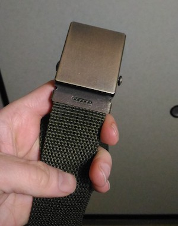
I started off by finding a metal belt at a 100 yen store. To remove any protective coating and to clean it up in general I polished it with some steel wool.
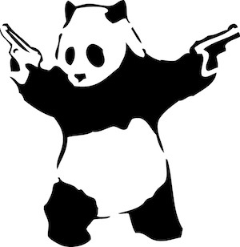
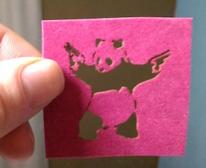
I created a stencil for a design I found online. I made this complex stencil with a laser cutter but it wouldn't be to hard to cut a simplier one by hand.
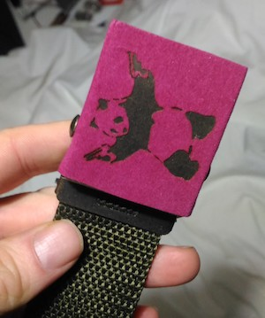
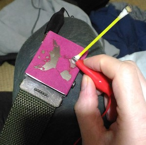
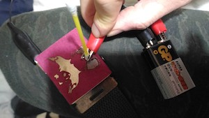
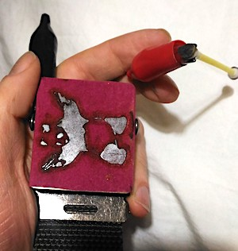
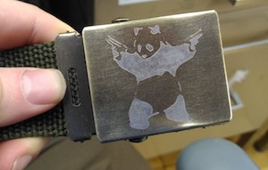
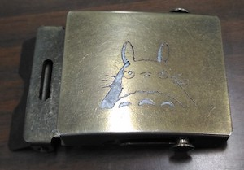
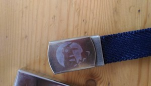
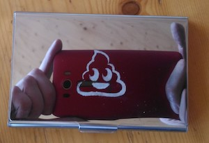
Recommendations for advancing hobby including links to online resources. If you would like to learn more about metal etching there are lots of tutorials and YouTube videos avaliable online. Then I add some links. Once you get into metal etching, you may want to get some better equipment. I would recommend getting a regulated voltage convertor so you can do etchings more quickly and save on batteries.